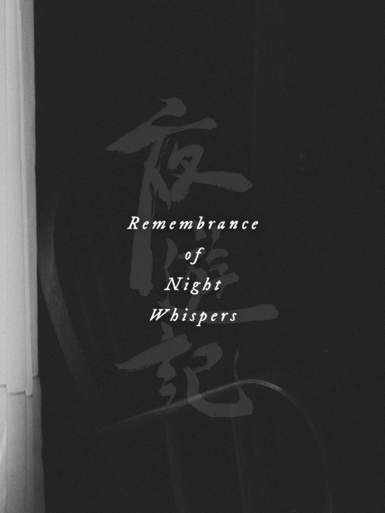

夜遊記·remembrance of night whispers
archival documentary, canada, 2026

[an archival project currently in production with chamelens_]
editor, colourist, graphic designer.
[credits]
Director | Lucien Leung
With Luvleen Hunjan
Editor & Colourist | Yi Shi
Sound Designer | Poppi Fella Pellegrino
Producer | Esteban Powell
Archival Consultant | Eyan Weiss
Digital Scan | Mark Loeser
Location Guide | Sasha Fatsevych
Translation Consultant | Leo Shek
Special Thanks | Gohul Amirthaganesan